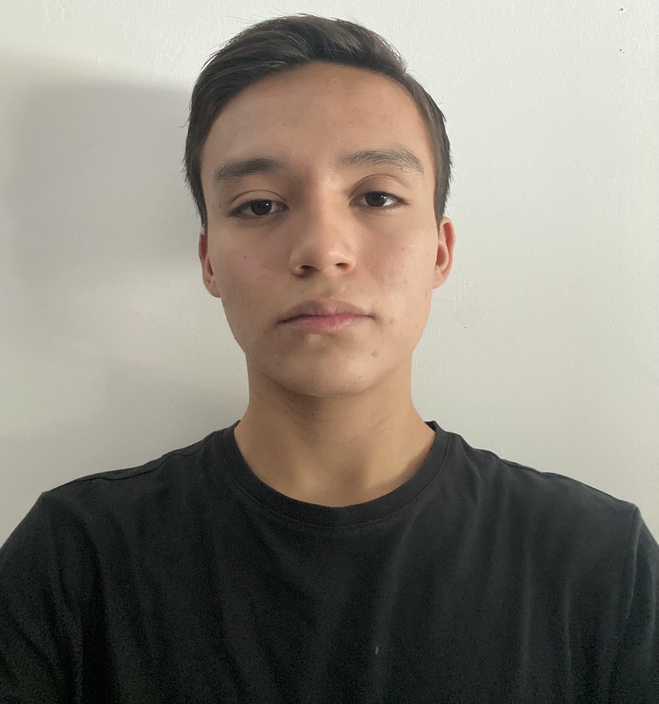

Portafolio de Actividades
Laboratorio de Elementos Programables
Departamento de Ciencias e Ingenierías | Universidad Iberoamericana Puebla, México.
Proyecto final

- Resumen -
El proyecto se enfocó en el desarrollo de un prototipo de dispositivo wearable centrado en la medición de la temperatura corporal, las pulsaciones por minuto (BPM) y la distancia recorrida (diseñado especialmente para usuarios con discapacidad visual). Este wearable compacto y ergonómico brinda a los usuarios información vital sobre su salud. La retroalimentación positiva de los usuarios beta respalda la efectividad del dispositivo, marcando un paso inicial hacia posibles mejoras y la expansión de características en futuras iteraciones.
- Introducción -
En un mundo cada vez más moldeado por los avances tecnológicos, los sensores se erigen como herramientas indispensables capaces de interpretar y responder a las complejidades de nuestro entorno. Reconocidos como catalizadores de la innovación, los sensores tienen la capacidad de reaccionar a estímulos físicos, químicos o biológicos. Esto plantea la pregunta: ¿podemos aprovechar este poder transformador para abordar los desafíos únicos enfrentados por las personas con discapacidad visual? En medio de este contexto, se ha desarrollado un prototipo de dispositivo wearable diseñado específicamente para medir la temperatura, las pulsaciones por minuto (BPM) y la distancia, teniendo en cuenta a las personas con discapacidad visual. Esta iniciativa no solo representa la convergencia de tecnologías de sensores de vanguardia, sino también un compromiso con la mejora de la vida diaria de aquellos que enfrentan desafíos particulares en salud y movilidad.
- Materiales -
-Protoboards
-Protoboards
-Sensor ultrasonico
-Pantalla OLED
-BSensor de BPM
-Botones de 2 pines
-Arduino UNO
-Attiny84
-Sensor de temperatura
- Desarrollo -
Paso 1 Reúne los materiales necesarios. Convierte el Arduino en un programador ISP, configura el Attiny, construye tu circuito; recomendamos utilizar los mismos pines que usamos en el Attiny. Si los cambias, debes adaptar el código a las nuevas conexiones. Descarga el archivo de código y súbelo utilizando el programador en el Arduino IDE. Verifica todas tus conexiones antes de cargar el código. Tus resultados deberían verse como en el video adjunto.
Paso 2 El paso 2 se basó en prototipar un reloj en cual fuera funcionable para poder medir los parametros, con esto se pidio la pcb para poder soldar y armar con el prototipado
- Pcb -
La pcb se construyó en base al prototipado en protoboard, respetando los pines correspondientes junto con sus conexiones
- Código -
- Resultados -
Los resultados fueron los esperados, pues se llegó a lo que se buscaba, se realizaron distintas pruebas para realmente conocer el rendimiento de nuestro werable, vayas de ellas cumpliendo con lo esperado, y dandonos la oportunidad de seguir mejorando el prototipo en futuros instantes.
- Conclusiones -
En conclusión, el proyecto de desarrollo de un dispositivo wearable con sensores biométricos para la medición de la temperatura, frecuencia cardíaca y distancia, especialmente diseñado para usuarios con discapacidad visual, representa una significativa convergencia de innovación tecnológica y compromiso social. La cuidadosa consideración del diseño ergonómico y la selección de parámetros de medición pertinentes demuestran una atención meticulosa a las necesidades específicas de los usuarios. La validación exitosa en pruebas beta subraya la efectividad del prototipo, señalando la posibilidad de futuras iteraciones y mejoras. Este proyecto no solo atiende a las demandas de precisión y usabilidad, sino que también proyecta una perspectiva prometedora para la aplicación de tecnologías sensoriales avanzadas en el ámbito de la salud y la accesibilidad.